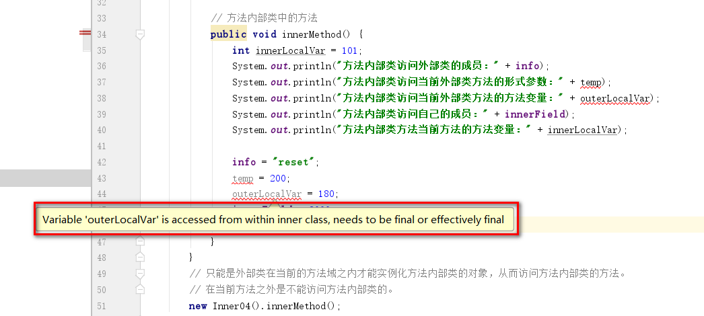
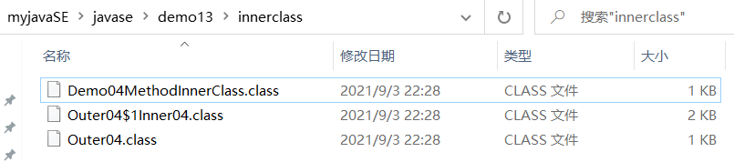
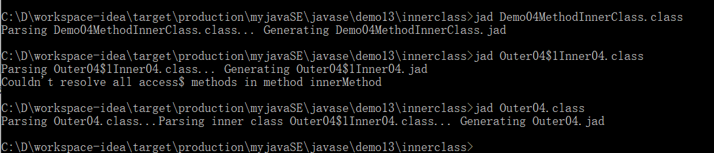
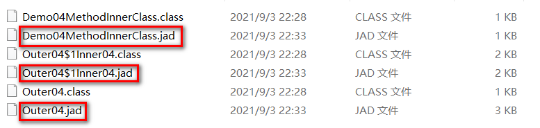
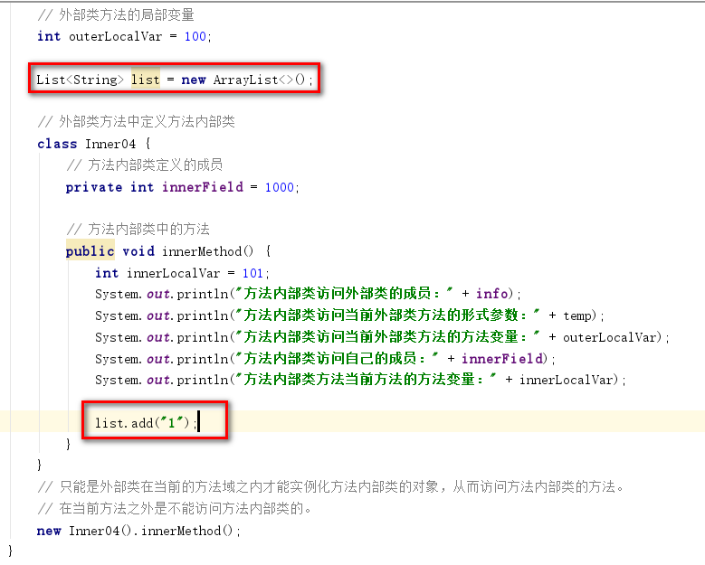

内部类
1、 Java内部类
1.1、 什么是内部类？
Java中，可以将一个类定义在另外一个类（接口），或者定义在方法里面，这样的类成为内部类。
比如类Inner定义在类Outer中，此时Inner称为内部类，Outer称为外部类。
内部类一般包括如下四种：
1. 成员内部类
2. 方法内部类
3. 匿名内部类
4. 静态内部类
1.2、对内部类的访问
对任何内部类的访问都和其本身对应的角色的访问是一样的：
1. 外部对成员内部类的访问，就好像访问一个类的成员。
2. 外部对方法内部类的访问，就好像访问一个类的方法变量（显然外部是不能访问方法变量的，只能外部类自己去访问）。
3. 外部对匿名内部类的访问，就好像访问一个类的匿名变量。
4. 外部对静态内部类的访问，就好像访问一个类的静态成员。
1.3、 成员内部类
成员内部类是最普通的内部类，它的定义位于一个类的内部，如下：
package javase.demo13.innerclass;
class Outer {
// @1
private static final String OUTER_STATIC_FINAL_FIELD = "外部类的静态常量";
private final String OUTER_NOT_STATIC_FINAL_FIELD = "外部类的非静态常量";
private static String OUTER_staticField = "外部类的静态成员";
private String OUTER_notStaticFiled = "外部类的非静态成员";
// @2
private String same_field = "相同的成员";
/**
* @3
*/
class Inner {
// @4
private static final String STATIC_FINAL_FIELD = "内部类的静态常量";
private final String NOT_STATIC_FINAL_FIELD = "内部类的非静态常量";
// @5
// private static String staticField = "内部类的静态成员";
private String notStaticFiled = "内部类的非静态成员";
// @6
private String same_field = "相同的成员";
public void print() {
// @7
System.out.println(STATIC_FINAL_FIELD);
System.out.println(NOT_STATIC_FINAL_FIELD);
System.out.println(notStaticFiled);
// @8
System.out.println(OUTER_STATIC_FINAL_FIELD);
System.out.println(OUTER_NOT_STATIC_FINAL_FIELD);
System.out.println(OUTER_staticField);
System.out.println(OUTER_notStaticFiled);
// @9
notSameMethod();
// @10
System.out.println(same_field);
sameMethod();
// @11
System.out.println(Outer.this.same_field);
Outer.this.sameMethod();
}
// @12
public void sameMethod(){
System.out.println("相同的方法");
}
}
public void fun() {
// @13
new Inner().print();
}
// @14
public void sameMethod(){
System.out.println("相同的方法");
}
// @15
public void notSameMethod(){
System.out.println("外部类的方法");
}
}
public class Demo00InnerClass {
public static void main(String args[]) {
// @16
new Outer().fun();// 在外部通过调用外部类的方法间接调用内部类
// @17
new Outer().new Inner().print();// 在外部直接实例化内部类调用内部类的方法
}
}
分析如上程序：
1. @3处定义了一个成员内部类，内部类此时就是外部类的一个成员变量。
2. @4处在成员内部类Inner中定义了几种成员变量，此时这几种成员变量是属于成员内部类Inner的。@5处是因为成员内部类相当于一个非静态的成员变量，所以它内部肯定不能定义静态的成员，但是它可以定义常量。@7处是在内部类的print()方法中调用了内部类定义的几种成员。即内部类可以随便调用自己内部定义的成员和方法。
3. @1处在外部类中定义了4种类型的成员属性，@8处在内部类Inner的print()方法中访问了外部类Outer中定义的各种类型的成员变量和private属性，所以，成员内部类的优点就是：方便的访问外部类的任何类型的成员变量和方法。
4. 成员内部类和普通类的成员一样，具有private,default,protected,public等权限和static修饰。这一点和外部类不同，外部类只能通过public和default两种访问权限。
5. @2和@6处，分别在外部类和内部类中定义了完全相同的成员；同样，@12和@14分别在内部类和外部类中定义了完全相同的方法。@15处在外部类中定义了外部类自己的方法，@9处在内部类中调用了外部类自己的方法。@10处在内部类调用了外部类和内部类定义的同名属性和方法。我们发现，成员内部类可以随便访问外部类的属性和方法，但是如果成员内部类中定义了和外部类中同名的属性和方法时，此时内部类会采取就近原则，导致访问的是成员内部类自己的属性和方法。如果此时要访问外部类的属性和方法，则要像@11处那样，通过"外部类.this."去访问外部类中的同名属性和方法。
6. @13处是外部类的fun()方法，外部类要想访问内部类的属性和方法，则必须new一个内部类的实例对象去访问。
7. 内部类的属性和方法除了在当前外部类中被访问外，还可以在其他类中访问。在其他类中要访问成员内部类的话，则必须创建成员内部类的对象。成员内部类依附外部类而存在，即如果要创建成员内部类的独享，前提是比如存在一个外部类的对象。创建成员内部类对象的一般方式如下：
Outer outer = new Outer();
Outer.Inner inner = outer.new Inner();
即先创建一个外部类对象，再通过外部类对象去创建内部类对象。
创建好内部类对象后就可以在外部访问内部类的成员和方法了。比如@17。
当然，如果要在外部访问内部类的成员和方法，除了创建内部类对象外，也可以通过外部类的方法间接去调用，比如@16。
8. Inner类作为Outer类的成员内部类，在外部类的fun()方法之中直接实例化成员内部类的对象并调用了成员内部类的方法print()，但是可以明显发现，内部类实际上已经破坏了一个类的结构；因为类本身是由成员变量和成员方法组成的。
我们来看看成员内部类的优点：
package javase.demo13.innerclass;
/**
* 成员内部类的优点
* 内部类破坏了类的结构，那么内部类具备什么优点呢？
* 将内部类拿到外边去就能看到内部类的优点了！
* 总结：本案例实现与上一个成员内部类相同的功能
* 但是明显比直接使用内部类复杂了很多，所以内部类的唯一好处就是：能够方便的访问外部类的私有属性。
* 内部类能够访问外部类的私有属性，这点很重要，因为在多线程里可以方便地通过这个特性让多个线程子类去共享同一个外部类中的共享资源，从而达到多任务的目的！
* 如果不使用内部类，就得像这个案例一样，通过引用传递去共享外部类。
*
* @author zhaoeh
*/
class Outer01 {
private String info = "hello world!!!";
/**
* 取得私有属性
*/
public String getInfo() {
return this.info;
}
/**
* 将当前外部类对象传递到内部类中
*/
public void fun() {
new Inner01(this).print();
}
}
/**
* 将之前的Inner类提取到外边定义
*
* @author zhaoeh
*/
class Inner01 {
private Outer01 out = null;// 引用外部类对象
/**
* 接收外部类实例
*
* @param out
*/
public Inner01(Outer01 out) {
this.out = out;
}
/**
* 打印外部类的私有属性
*/
public void print() {
System.out.println(out.getInfo());
}
}
/**
* 调用-业务层入口
*
* @author zhaoeh
*/
public class Demo01InnerClass {
public static void main(String args[]) {
new Outer01().fun();
}
}
我们来总结一下：
1. 成员内部类可以访问自己的任何成员和方法。
2. 成员内部类可以访问外部类的任何成员和方法。
3. 当成员内部类和外部类中定义了相同的成员和方法时，此时成员内部类采取就近原则访问的是自己的成员和方法，如果要想访问外部类的成员和方法，则需要采用“外部类.this.”去访问。
4. 外部类可以访问成员内部类的属性和方法，需要在外部类中new一个成员内部类的对象。
5. 其他类中也可以访问成员内部类的方法，需要先创建一个外部类对象，再通过外部类对象去创建内部类对象。即：new Outer().new Inner();
1.4、 静态内部类
静态内部类也是定义在一个类里面的类，只不过在类的前面多了一个关键字static，静态内部类就好像外部类的普通静态成员一样。
package javase.demo13.innerclass;
class Outer02 {
private static String info = "hello ZhaoErHu!!!";// 定义外部类的static属性
private String notStaticInfo = "hello Eric!!!";// 定义外部类的非static属性
/**
* 定义static静态内部类
*/
static class Inner02 {
public void print() {
// 静态内部类直接访问外部类中静态的成员变量，通过"外部类名称.属性名称"进行访问调用
System.out.println(Outer02.info);
// 静态内部类直接访问外部类中非静态的成员变量，通过"外部类对象.属性名称"进行访问调用
System.out.println(new Outer02().notStaticInfo);
}
}
}
public class Demo02InnerClass {
public static void main(String args[]) {
// 此时内部类是static的，所以不用实例化外部类，可以直接通过外部类名进行访问。
// 但是因为内部类本身是个类，所以内部类需要实例化。
// 注意下面实例化静态内部类的写法：不用实例化外部类对象，直接实例化静态内部类对象。
// 但是new关键字是直接在“外部类.内部类()”整体前面的。
// new Outer02.Inner02()表示直接通过外部类名访问static内部类的构造器，前面加上new就是直接实例化静态内部类。
new Outer02.Inner02().print();
}
}
1. 使用static定义成员内部类，此时成员内部类就是静态内部类。
2. 使用static可以声明方法或者属性，也可以声明成员内部类，用static声明的成员内部类和普通类的静态成员类似。
3. 与成员内部类不同的是，静态内部类是不需要依附于外部类的，它的定义随着外部类的装载将自动被保存在方法区内存的静态区，即外部是可以直接访问静态内部类并且实例化内部类对象的。即不需要实例化外部类对象，直接访问内部类构造器进行静态内部类对象的实例化。比如上面案例中的：new Outer02.Inner02().print();
4. 静态内部类不能访问非static的外部类属性。静态内部类要想访问外部类中的非静态的成员变量，必须实例化外部类对象，通过"对象名.属性"的访问时才能访问，其实和Java中类之间的访问关系是一样的)。比如上面案例中的：System.out.println(new Outer02().notStaticInfo);
5. 必须强调一点，静态内部类实际上和内部类本身没有什么关系，只是将一个类修饰为static的了，要想使用静态内部类同样需要创建内部类的对象。它和成员内部类的区别就是：
（1）成员内部类需要创建外部类的实例后才能保存内部类的定义。
（2）静态内部类不需要创建外部类的实例，它可以直接通过“new 外部类.内部类()” 的方式直接创建内部类对象，而不需要创建外部类对象，即静态内部类的定义直接被保存在了方法区内存的静态区。
静态内部类的使用就和工具类、静态成员的使用一样，只是避免去创建外部类对象而已，但内部类本身仍旧需要创建它的对象才能访问它的内容。
1.5、外部调用成员内部类和静态内部类
在外部实例化成员内部类对象和静态内部类对象的方式：
package javase.demo13.innerclass;
class Outer03 {
private String info = "在外部通过外部类对象访问非静态的内部类";
/**
* 成员内部类
*/
class Inner03 {
public void print() {
//非静态的内部类访问非静态的外部类成员变量，同一个类中直接访问
System.out.println(info);
}
}
/**
* 静态内部类
*/
static class Inner04{
public void print(){
System.out.println(new Outer03().info);
}
}
}
public class Demo03InnerClass {
public static void main(String args[]) {
// 1.普通的成员内部类，必须先实例化外部类对象，然后才能实例化内部类对象。
Outer03.Inner03 in = new Outer03().new Inner03();
// 2.静态内部类不需要实例化外部类对象，直接通过“外部类.内部类()”直接访问内部类的构造方法对静态内部类进行实例化。
Outer03.Inner04 in2 = new Outer03.Inner04();
// 调用内部类方法
in.print();
in2.print();
}
}
1. 一个成员内部类除了可以直接通过外部类中进行访问，也可以直接在其他类中进行调用。
2. 调用的方式为：
（1）当内部类是成员内部类时，需要创建外部类对象，再去创建内部类对象（内部类此时不能是private的）：外部类.内部类 内部类对象 = new 外部类().new 内部类();如上面案例：Outer03.Inner03 in = new Outer03().new Inner03();
（2）当内部类是静态内部类时，不需要创建外部类对象，直接通过外部类名访问内部类去创建内部类对象（内部类此时不能是private的）：外部类.内部类 内部类对象 = new 外部类.内部类()。如上面案例：Outer03.Inner04 in2 = new Outer03.Inner04();
注意：静态内部类和非静态内部类的访问关系和Java中类与类之间的访问关系完全一致。
1.6、方法内部类
方法内部类也叫做局部内部类，是定义在一个方法或者一个作用域里面的类。它和成员内部类的区别在于局部内部类的访问仅限于方法内或者当前作用域。
package javase.demo13.innerclass;
class Outer04 {
private String info = "外部类的成员属性";
public void outterMethod(int temp) {
// 外部类方法的局部变量
int outerLocalVar = 100;
// 外部类方法中定义方法内部类
class Inner04 {
// 方法内部类定义的成员
private int innerField = 1000;
// 方法内部类中的方法
public void innerMethod() {
int innerLocalVar = 101;
System.out.println("方法内部类访问外部类的成员：" + info);
System.out.println("方法内部类访问当前外部类方法的形式参数：" + temp);
System.out.println("方法内部类访问当前外部类方法的方法变量：" + outerLocalVar);
System.out.println("方法内部类访问自己的成员：" + innerField);
System.out.println("方法内部类方法当前方法的方法变量：" + innerLocalVar);
}
}
// 只能是外部类在当前的方法域之内才能实例化方法内部类的对象，从而访问方法内部类的方法。
// 在当前方法之外是不能访问方法内部类的。
new Inner04().innerMethod();
}
}
public class Demo04MethodInnerClass {
public static void main(String args[]) {
new Outer04().outterMethod(300);
}
}
接下来，在上述代码的方法内部类的innerMethod方法中尝试修改各个变量的值，innerMethod方法中加入如下代码：
// 方法内部类中的方法
public void innerMethod() {
int innerLocalVar = 101;
System.out.println("方法内部类访问外部类的成员：" + info);
System.out.println("方法内部类访问当前外部类方法的形式参数：" + temp);
System.out.println("方法内部类访问当前外部类方法的方法变量：" + outerLocalVar);
System.out.println("方法内部类访问自己的成员：" + innerField);
System.out.println("方法内部类方法当前方法的方法变量：" + innerLocalVar);
// 尝试在方法内部类中修改如下变量的值，结果编译报错了
info = "reset";
temp = 200;
outerLocalVar = 180;
innerField = 2000;
innerLocalVar = 110;
}
结果尝试修改变量值，temp和outerLocalVar的修改提示编译错误：

根据idea提示的错误信息，可以知道 外部类方法的形式参数temp和外部方法的局部变量outerLocalVar 是不能被修改的，因为它们是final的，即常量。
这是怎么回事呢？我们没有设置它们为final的啊。
我们先看看Demo04MethodInnerClassjava编译后的字节码文件：

可以看出，Demo04MethodInnerClassjava编译后共产生了3个字节码class文件，我们使用反编译工具jad来反编译这3个class：

在class同级目录下生成jad文件：

文件内容如下：
Demo04MethodInnerClass.jad
// Decompiled by Jad v1.5.8g. Copyright 2001 Pavel Kouznetsov.
// Jad home page: http://www.kpdus.com/jad.html
// Decompiler options: packimports(3)
// Source File Name: Demo04MethodInnerClass.java
package javase.demo13.innerclass;
// Referenced classes of package javase.demo13.innerclass:
// Outer04
public class Demo04MethodInnerClass
{
public Demo04MethodInnerClass()
{
}
public static void main(String args[])
{
(new Outer04()).outterMethod(300);
}
}
外部类 Outer04.class
// Decompiled by Jad v1.5.8g. Copyright 2001 Pavel Kouznetsov.
// Jad home page: http://www.kpdus.com/jad.html
// Decompiler options: packimports(3)
// Source File Name: Demo04MethodInnerClass.java
package javase.demo13.innerclass;
import java.io.PrintStream;
class Outer04
{
Outer04()
{
info = "\u5916\u90E8\u7C7B\u7684\u6210\u5458\u5C5E\u6027";
}
public void outterMethod(final int temp)
{
final int outerLocalVar = 100;
class _cls1Inner04
{
public void innerMethod()
{
int innerLocalVar = 101;
System.out.println((new StringBuilder()).append("\u65B9\u6CD5\u5185\u90E8\u7C7B\u8BBF\u95EE\u5916\u90E8\u7C7B\u7684\u6210\u5458\uFF1A").append(info).toString());
System.out.println((new StringBuilder()).append("\u65B9\u6CD5\u5185\u90E8\u7C7B\u8BBF\u95EE\u5F53\u524D\u5916\u90E8\u7C7B\u65B9\u6CD5\u7684\u5F62\u5F0F\u53C2\u6570\uFF1A").append(temp).toString());
System.out.println((new StringBuilder()).append("\u65B9\u6CD5\u5185\u90E8\u7C7B\u8BBF\u95EE\u5F53\u524D\u5916\u90E8\u7C7B\u65B9\u6CD5\u7684\u65B9\u6CD5\u53D8\u91CF\uFF1A").append(outerLocalVar).toString());
System.out.println((new StringBuilder()).append("\u65B9\u6CD5\u5185\u90E8\u7C7B\u8BBF\u95EE\u81EA\u5DF1\u7684\u6210\u5458\uFF1A").append(innerField).toString());
System.out.println((new StringBuilder()).append("\u65B9\u6CD5\u5185\u90E8\u7C7B\u65B9\u6CD5\u5F53\u524D\u65B9\u6CD5\u7684\u65B9\u6CD5\u53D8\u91CF\uFF1A").append(innerLocalVar).toString());
}
private int innerField;
final int val$temp;
final int val$outerLocalVar;
final Outer04 this$0;
_cls1Inner04()
{
this.this$0 = Outer04.this;
temp = i;
outerLocalVar = j;
super();
innerField = 1000;
}
}
(new _cls1Inner04()).innerMethod();
}
private String info;
}
内部类 Outer04$1Inner04.jad
// Decompiled by Jad v1.5.8g. Copyright 2001 Pavel Kouznetsov.
// Jad home page: http://www.kpdus.com/jad.html
// Decompiler options: packimports(3)
// Source File Name: Demo04MethodInnerClass.java
package javase.demo13.innerclass;
import java.io.PrintStream;
// Referenced classes of package javase.demo13.innerclass:
// Outer04
class Outer04$1Inner04
{
public void innerMethod()
{
int innerLocalVar = 101;
System.out.println((new StringBuilder()).append("\u65B9\u6CD5\u5185\u90E8\u7C7B\u8BBF\u95EE\u5916\u90E8\u7C7B\u7684\u6210\u5458\uFF1A").append(Outer04.access$000(Outer04.this)).toString());
System.out.println((new StringBuilder()).append("\u65B9\u6CD5\u5185\u90E8\u7C7B\u8BBF\u95EE\u5F53\u524D\u5916\u90E8\u7C7B\u65B9\u6CD5\u7684\u5F62\u5F0F\u53C2\u6570\uFF1A").append(val$temp).toString());
System.out.println((new StringBuilder()).append("\u65B9\u6CD5\u5185\u90E8\u7C7B\u8BBF\u95EE\u5F53\u524D\u5916\u90E8\u7C7B\u65B9\u6CD5\u7684\u65B9\u6CD5\u53D8\u91CF\uFF1A").append(val$outerLocalVar).toString());
System.out.println((new StringBuilder()).append("\u65B9\u6CD5\u5185\u90E8\u7C7B\u8BBF\u95EE\u81EA\u5DF1\u7684\u6210\u5458\uFF1A").append(innerField).toString());
System.out.println((new StringBuilder()).append("\u65B9\u6CD5\u5185\u90E8\u7C7B\u65B9\u6CD5\u5F53\u524D\u65B9\u6CD5\u7684\u65B9\u6CD5\u53D8\u91CF\uFF1A").append(innerLocalVar).toString());
}
private int innerField;
final int val$temp;
final int val$outerLocalVar;
final Outer04 this$0;
Outer04$1Inner04()
{
this.this$0 = this$0;
val$temp = i;
val$outerLocalVar = I.this;
super();
innerField = 1000;
}
}
从反编译后的文件可以看出，方法内部类持有外部类的一个引用，并且编译器默认将外部类的方法形式参数和局部变量使用final修饰了。
实际上方法内部类想要修改外部类方法的形式参数或者局部变量的话，是有其他方式可以间接实现的。我们可以借助集合容器间接的达到修改某些数值的目的，如下：
外部如果是list或者set，map集合之类的，尽管编译器默认修饰它们为final，但此时只是不允许重新实例化这些集合，我们完全可以把想要修改的数据缓存到这些集合当中然后做进一步的判断。即我们可以在方法内部类中对这些集合对象进行put，get等操作。但是一旦进行put操作则必须考虑多线程安全问题。

总结：
1. 内部类除了能直接在外部类里面定义外，也可以直接在外部类的方法或者其他作用域块里面定义，此时内部类称为方法内部类。
2. 方法内部类就像一个方法中的局部变量一样，是不能有public、protected、private以及static等修饰符的。
3. 外部类要想访问方法内部类，必须在当前方法或者当前作用域中创建方法内部类的对象进行访问，在其他作用域中无法访问方法内部类。比如上述案例只能在当前外部类的fun()方法中通过new Inner04().print();去访问当前方法中的内部类。其他作用域中无法访问该方法内部类。。
4. 方法内部类可以任意访问外部类的成员和方法。
5. 方法内部类不能直接修改外部类方法中的形式参数和方法变量，因为编译器默认将有方法内部类的外部类方法中的形式参数和方法变量声明为final，因此可以访问但是不能修改。
6. 方法内部类不能在外部进行创建（因为它在外部类的方法中），只能在其所在的方法或者作用域中被创建。
为啥方法内部类要访问方法形式参数或者所在方法的局部变量，必须要求它们是final的呢？
之所以访问方法参数或者方法局部变量须是final的，是因为先执行方法，再实例化方法内部类，如果多线程环境下，该参数不是final的，则内部类访问到的参数可能被更改，这样就无法保证数据一致性。
通俗点就是：一个方法中如果定义一个内部类的话，则该方法和该内部类实际上在编译器执行后是相互独立的，但是从语法上方法内部类又可以访问方法的形参，这样一来实际上就破坏了方法中参数是线程私有的性质了，可能一个线程在执行方法，另外一个线程在实例化方法内部类。
1.7、匿名内部类
匿名内部类应该是我们平时编写代码用的最多的一种内部类。匿名内部类指的就是一种没有名称的内部类，其作用范围是方法内部或者局部作用域，往往是作为方法的实际参数进行传递的。
不使用匿名内部类：
package javase.demo13.innerclass;
interface C {
public abstract void printInfo();
}
class D implements C {
//不使用匿名内部类需要专门定义子类实现接口的抽象方法(non-Javadoc)
public void printInfo() {
System.out.println("---专门定义子类实现接口的抽象方法----");
}
}
class Y {
public void fun1() {
this.fun2(new D());// 向上转型，发现，此处实现子类只实例化一次，所以考虑用匿名内部类替代
}
public void fun2(C c) {
c.printInfo();// 调用接口的方法，实际上向上转型，调用的是子类实现的方法
}
}
public class Demo05InnerClass {
public static void main(String args[]) {
new Y().fun1();// 匿名对象直接调用
}
}
在实现接口时使用匿名内部类可以方便的实现接口中的抽象方法。
假如不使用匿名内部类的话，则必须单独设计子类去实现接口的抽象方法。
使用匿名内部类如下：
package javase.demo13.innerclass;
interface A {
public abstract void printInfo();
}
class X {
public void fun1() {
/**
* 匿名内部类的实现往往会产生一个匿名对象，也可以指定该匿名对象的名称，使之成为具名对象。
*/
// A a = new A(){
//
// @Override
// public void printInfo() {
//
// }};
/*
* new A(){}是匿名内部类的实现，其同时会返回一个匿名对象；当然可以将其不设为匿名对象，即new A()可以有引用名称。
*/
this.fun2(new A() {
public void printInfo() {
System.out.println("----匿名内部类实现接口A的抽象方法，不单独定义子类实现类----");
}
});// 最后的)是方法的，必须有;
}
public void fun2(A a) {
a.printInfo();// 调用接口的方法，该方法必须被子类实现
}
}
public class Demo06InnerClass {
public static void main(String args[]) {
new X().fun1();
}
}
1. 使用匿名内部类能够在实现父类或者接口中方法的同时产生一个相应的对象，但是前提是这个父类或者接口必须先存在。
2. 在实现接口或者继承父类时使用匿名内部类方便的实现接口或者父类中的抽象方法。
3. 匿名内部类的定义一般是在方法中或者是局部作用域中，因此匿名内部类也不允许有public、protected、private以及static等修饰符。
4. 匿名内部类简化了专门定义子类实现接口抽象方法的步骤。直接new 接口()或者new 父类()同时覆盖抽象方法即可创建一个匿名内部类对象。
5. 匿名内部类方便的创建一个匿名对象或者非匿名对象，它本身是使用new操作直接创建了一个对象，所以要注意new操作后面的分号;，因为new是一个语句。如果这个语句是用作方法的实际参数，;是可以没有的。
6. 一般子类只需要实例化一次的情况下考虑使用匿名内部类替代实现子类。
7. java8的lambda表达式就是基于匿名内部类的方式的，匿名内部类实际上是特殊的方法内部类，同样匿名内部类中的方法形参和局部变量默认被编译器修饰为final的，意味着我们可以访问它们，但要是尝试修改的话则直接编译报错。
8. 匿名内部类是唯一没有构造器的类，正因为其没有构造器，所以匿名内部类的使用范围十分有限，大部分匿名内部类用作接口回调。
9. 匿名内部类在编译的时候由系统自动起名为Outer$1.class。
10. 一般来说匿名内部类用于继承其他类或者实现接口，并不需要增加额外的方法，只是对继承方法的实现或者是重写（因为匿名内部类往往是一个匿名对象，只使用一次即可，因此增加方法没必要）。
2、深入理解内部类原理
2.1、 为什么成员内部类可以无条件的访问外部类的成员？
事实上，编译器在编译时，会将成员内部类单独编译成一个字节码文件。下面是Outer和Inner编译后的字节码：
其中Outer$Inner.class是内部类的字节码文件。使用javap -v反编译它，从它的反编译信息中可以看到，编译器默认为成员内部类添加了一个指向外部类对象的引用，那么这个引用是如何初始化赋值的呢？
实际上，我们在编写成员内部类时，内部类是无参构造，但是编译器会替我们优化内部类的构造器，默认为成员内部类的构造器添加一个参数，这个参数的类型为指向外部类对象的一个引用，所以成员内部类的Outer this&0指针便指向了外部类对象，因此在成员内部类中可以随意访问外部类的成员。
从这里也间接说明了成员内部类是依赖于外部类的，如果没有创建外部类对象，则无法对Outer this&0进行初始化赋值，也就无法创建成员内部类的对象了。
2.2、 为什么方法内部类和匿名内部类只能访问final变量？
如果局部变量的值可以在编译期间确定，则直接在匿名内部类里面创建一个拷贝。如果局部变量的值无法在编译期间确定，则通过构造器传参的方式来对拷贝进行初始化赋值。
即在方法中定义的变量和在匿名内部类中的变量不是同一个变量，这样一来，在并发环境下可能导致：当一个线程改变方法中的变量时，另外一个线程获取到的匿名内部类中的变量可能不是被修改后的拷贝值，造成了数据不一致。
为了解决这个问题，java编译器就限定必须将方法中的变量或者形式参数定义为final的，不允许在编译期间修改变量的值（如果是引用则不允许指向新的地址），这样并发环境下的数据不一致问题就解决了。
2.3、 静态内部类有特殊的地方吗？
静态内部类是不依赖于外部类对象的，也就是说可以在不创建外部类对象的情况下直接创建静态内部类的对象。另外，静态内部类是不持有外部类对象的引用的，静态内部类是没有Outer this&0引用的。